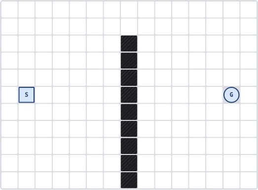
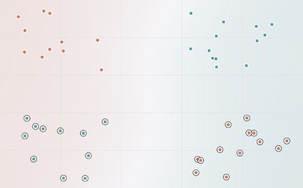
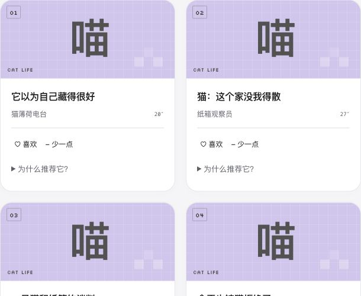
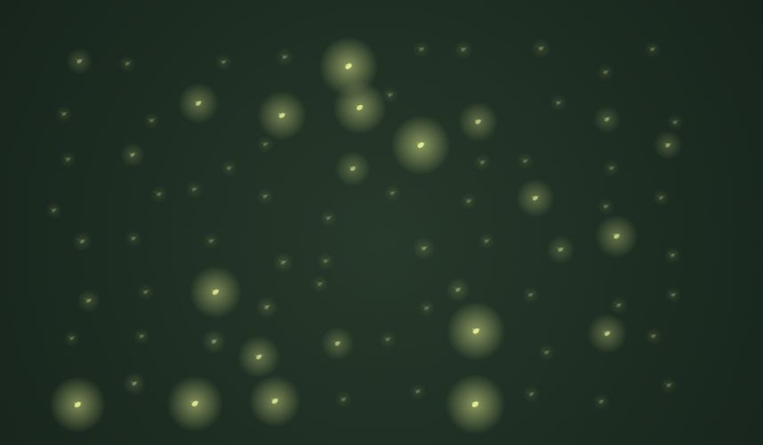
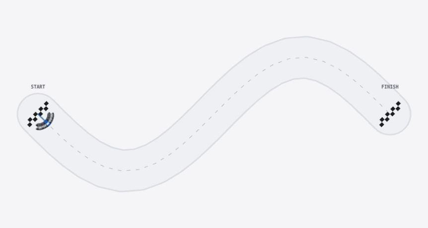
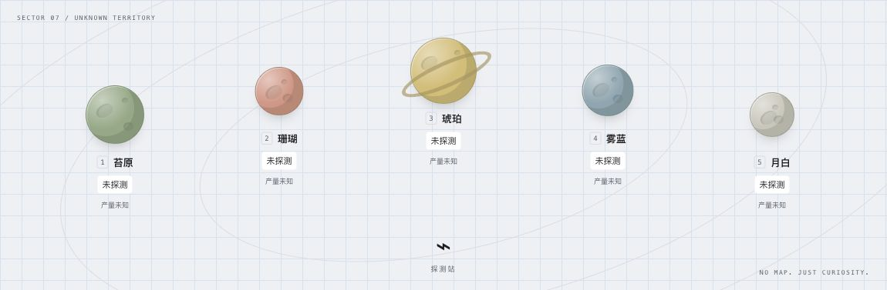
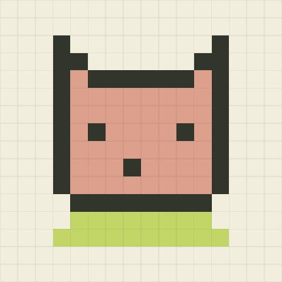
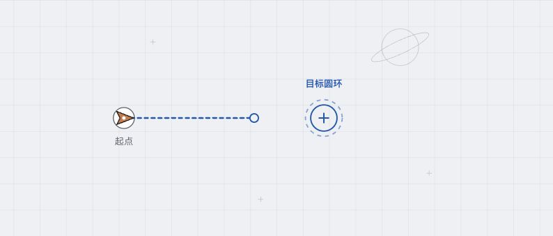
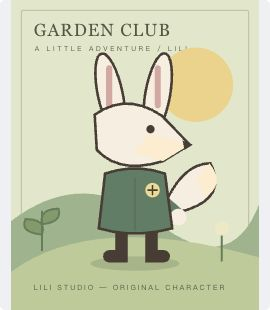

PICK YOUR CURIOSITY
先动手。
再问为什么。
十个实验，不需要先读完一本教科书。
选一个感兴趣的，改变它，看看会发生什么。

推荐与排序
推荐系统
给首页排一次座位，看见谁被选中。
进入实验BFS / A*
寻路竞技场
改一格障碍，猜猜下一步怎么走。
进入实验
耦合振子
萤火虫合奏
让两群互相听见，一起闪亮。
进入实验
遗传算法
遗传赛车
旧冠军遇上新路障，后代能赢吗？
进入实验
探索与利用
盲盒探矿
同一份线索，你会飞向哪颗星球？
进入实验
编码与压缩
像素邮局
把一张画寄成暗号，再亲手还原。
进入实验
世界模型
脑内预演室
飞过一次，再看它学到了什么。
进入实验
自我改进的简化模拟
AI 创作室
修好一张图，再改变下一次的做法。
进入实验LEARNING BY MAKING
我怎样学算法，
你也来试试。
我是陈全。我学分类时，先看点和分界，再理解规则怎样改变。
算法游乐场把这个过程做成实验；GenAI Learning OS 把概念和学习路径串起来。
先从一条线学会分组，再拆开一次梯度更新，最后回到 GenAI OS 读公式。全部实验使用简化模型或合成数据，不代表完整前沿模型能力，也没有把“玩过”当成“掌握”。
走一遍这条学习路线